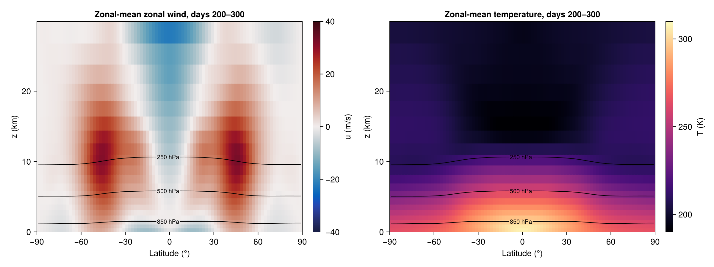
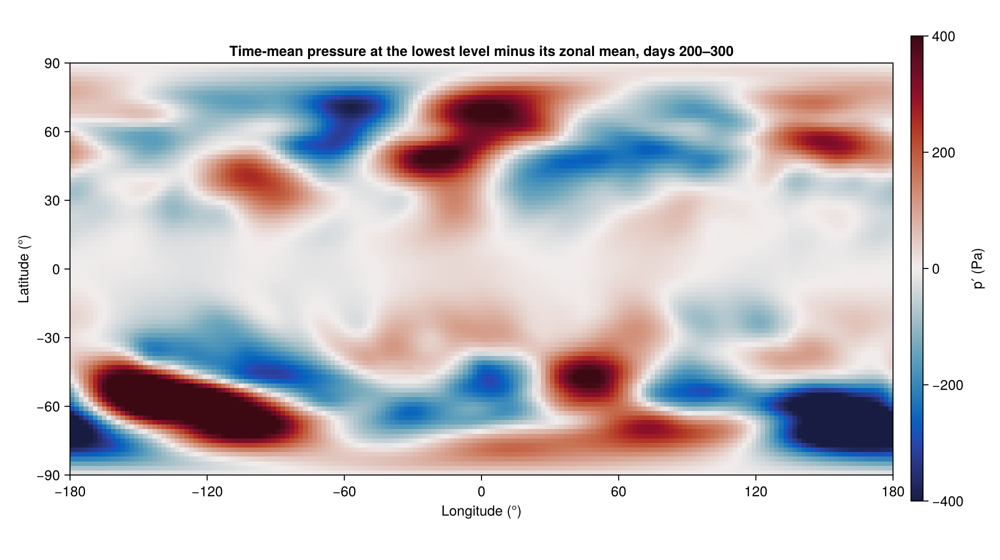
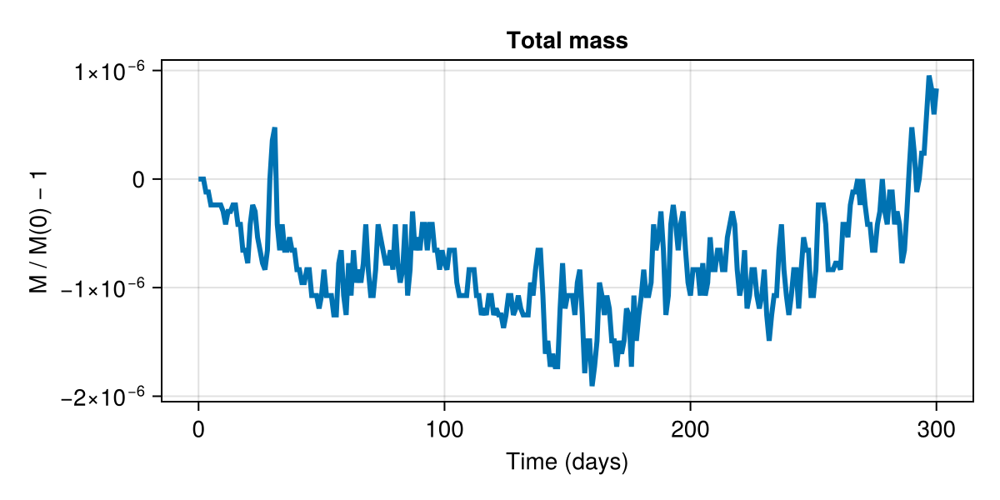

Held–Suarez on the Yin-Yang grid
This example simulates the dry general circulation of Held and Suarez (1994) on the Yin-Yang grid of Kageyama and Sato (2004). The Held–Suarez benchmark replaces every physical parameterization with two simple forcings: Rayleigh friction in a boundary layer below $σ = p / pˢ = 0.7$, and Newtonian relaxation of temperature toward a zonally symmetric radiative equilibrium $Tᵉ(φ, p)$. After a few months of spin-up the result is an Earth-like climate, with midlatitude jets driven by baroclinic eddies.
A latitude–longitude grid has a pole problem: its meridians converge, so the polar cells are tiny and set the time step. The Yin-Yang grid covers the sphere with two identical pieces of a latitude–longitude grid, each spanning 270° of longitude and 90° of latitude around its own equator. The "Yin" panel is the low-latitude band of the geographic grid; the "Yang" panel is the same band rotated so that its equator runs through the geographic poles. Neither panel comes near its own poles, so the grid spacing is nearly uniform. The panels overlap slightly, and the halo of each panel is interpolated from the other, with horizontal vectors rotated between the panels' bases.
Because the forcing is zonally symmetric, any departure of the time-mean climate from zonal symmetry is either sampling noise or an imprint of the grid. We look for one at the end.
using Breezeusing Oceananigansusing Oceananigans.Unitsusing Oceananigans.Coriolis: TriadSchemeusing Oceananigans.MultiRegion: remapped_fieldusing Printfusing CairoMakieusing CUDAOceananigans.defaults.FloatType = Float32Float32Grid
Each panel spans 270° × 90° with 2° cells, and 20 levels reach up to 30 km, stretched toward the surface.
Nz = 20H = 30kilometersz = ExponentialDiscretization(Nz, 0, H; scale=H/2, bias=:left)grid = YinYangGrid(GPU(); size=(135, 45, Nz), halo=(5, 5, 5), z)143×53×20 YinYangGrid{Float32, FullyConnected, FullyConnected, Bounded} on CUDAGPU with 5×5×5 halo
├── core: 135×45 cells per panel spanning 270° × 90° with Δλ′ = Δφ′ = 2.0°
├── overlap: 4 cells (8.0°) beyond the core on every side, 4×4 interpolation stencils
├── panels: λ′ ∈ [-143.0, 143.0], φ′ ∈ [-53.0, 53.0]
├── Yin (region 1): panel frame = geographic frame
├── Yang (region 2): (x, y, z) ↦ (-x, z, y), panel (λ′, φ′) = (0, 0) at (λ, φ) = (180, 0)
└── z: Bounded z ∈ [0.0, 30000.0] variably spaced with min(Δz)=493.833, max(Δz)=3301.72Model
We use fully compressible dynamics with acoustic substepping and fifth-order WENO advection. The Held–Suarez forcing depends only on latitude and pressure, and every node of either panel knows its geographic latitude, so the forcing works unchanged on the Yin-Yang grid.
The Coriolis force uses the triad scheme of Arakawa and Lamb (1981). The axes of the Yang panel are rotated from east and north, so the Coriolis parameter varies along both of its grid directions. The triads weight it isotropically, whereas the default 4-point averaging averages it along one direction only, and so treats the two panels differently.
The interpolation between the panels does not conserve mass: each panel steps the cells it owns with its own estimate of the flux through the curve that divides the sphere between the panels, and the two estimates differ. Below, add_conservation_fixer! adds the callback that evaluates the mass each stage adds through this mismatch from the model's own fluxes and removes it. We check the mass budget at the end.
constants = ThermodynamicConstants()g = constants.gravitational_accelerationcᵖᵈ = constants.dry_air.heat_capacityT₀ = 250θᵣ(z) = T₀ * exp(g * z / (cᵖᵈ * T₀))dynamics = CompressibleDynamics(SplitExplicitTimeDiscretization(); reference_potential_temperature=θᵣ)coriolis = SphericalCoriolis(scheme=TriadScheme())forcing = held_suarez_forcings()model = AtmosphereModel(grid; dynamics, coriolis, forcing, advection = WENO(order=5), thermodynamic_constants = constants)AtmosphereModel{GPU, MultiRegionGrid}(time = 0 seconds, iteration = 0)
├── grid: 143×53×20 YinYangGrid{Float32, FullyConnected, FullyConnected, Bounded} on CUDAGPU with 5×5×5 halo
├── dynamics: CompressibleDynamics{SplitExplicitTimeDiscretization}
├── formulation: LiquidIcePotentialTemperatureFormulation
├── thermodynamic_constants: ThermodynamicConstants{Float32}
├── timestepper: AcousticRungeKutta3
├── advection scheme:
│ ├── momentum: WENO{3, Float32, Oceananigans.Utils.BackendOptimizedDivision}(order=5)
│ ├── ρθ: WENO{3, Float32, Oceananigans.Utils.BackendOptimizedDivision}(order=5)
│ └── ρqᵛ: WENO{3, Float32, Oceananigans.Utils.BackendOptimizedDivision}(order=5)
├── forcing: ρu=>HeldSuarezForcing, ρv=>HeldSuarezForcing, ρE=>HeldSuarezForcing
├── tracers: ()
├── coriolis: Oceananigans.Coriolis.SphericalCoriolis{Oceananigans.Coriolis.TriadScheme, Float32, Oceananigans.Coriolis.NonhydrostaticFormulation}
└── microphysics: NothingInitial condition
The atmosphere starts at rest with the reference potential temperature $θᵣ(z)$ plus a little noise to break the symmetry. HydrostaticallyBalancedDensity integrates the density of each column into discrete hydrostatic balance with it.
θᵢ(λ, φ, z) = θᵣ(z) + 0.1 * (rand() - 1/2)set!(model, θ=θᵢ, ρ=HydrostaticallyBalancedDensity())Simulation
We run for 300 days with an advective CFL of 0.7. The Yin-Yang grid has no converging meridians, so the time step is not limited by tiny polar cells.
stop_time = 300dayssimulation = Simulation(model; Δt=20minutes, stop_time)add_conservation_fixer!(simulation)conjure_time_step_wizard!(simulation; cfl=0.7, max_Δt=30minutes)function progress(sim) u, v, w = sim.model.velocities T = sim.model.temperature @info @sprintf("Iter %6d | t = %s | Δt = %s | max|u| = %.1f m/s | max|w| = %.3f m/s | T ∈ [%.1f, %.1f] K | wall time = %s", iteration(sim), prettytime(sim), prettytime(sim.Δt), maximum(abs, u), maximum(abs, w), minimum(T), maximum(T), prettytime(sim.run_wall_time)) return nothingendadd_callback!(simulation, progress, TimeInterval(10days))Output
The velocities are stored in each panel's own basis, so we remap them to geographic (eastward, northward) components on a global latitude–longitude grid and take zonal means there, together with the temperature and the pressure. The zonal means are averaged over the last 100 days.
u, v, w = model.velocitiesT = model.temperaturep = dynamics_pressure(model.dynamics)ρ = total_density(model.dynamics)uᵍ, vᵍ = remapped_field((u, v))Tᵍ = remapped_field(T)pᵍ = remapped_field(p)zonal_means = (u = Field(Average(uᵍ, dims=1)), T = Field(Average(Tᵍ, dims=1)), p = Field(Average(pᵍ, dims=1)))NamedTuple with 3 Fields on different grids:
├── u: 1×90×20 Field{Nothing, Center, Center} reduced over dims = (1,) on LatitudeLongitudeGrid on CUDAGPU
│ └── grid: 180×90×20 LatitudeLongitudeGrid{Float32, Periodic, Bounded, Bounded} on CUDAGPU with 5×5×5 halo
├── T: 1×90×20 Field{Nothing, Center, Center} reduced over dims = (1,) on LatitudeLongitudeGrid on CUDAGPU
│ └── grid: 180×90×20 LatitudeLongitudeGrid{Float32, Periodic, Bounded, Bounded} on CUDAGPU with 5×5×5 halo
└── p: 1×90×20 Field{Nothing, Center, Center} reduced over dims = (1,) on LatitudeLongitudeGrid on CUDAGPU
└── grid: 180×90×20 LatitudeLongitudeGrid{Float32, Periodic, Bounded, Bounded} on CUDAGPU with 5×5×5 haloWe also want maps of the lowest level: the temperature every day, to watch the weather, and the time-mean pressure, to look for an imprint of the grid. We extract the level on each panel and remap the two-dimensional result.
@inline lowest_level(i, j, k, grid, f) = @inbounds f[i, j, 1]Tˢ = remapped_field(Field(KernelFunctionOperation{Center, Center, Nothing}(lowest_level, grid, T)))pˢ = remapped_field(Field(KernelFunctionOperation{Center, Center, Nothing}(lowest_level, grid, p)))simulation.output_writers[:time_mean] = JLD2Writer(model, (; zonal_means..., pˢ); schedule = AveragedTimeInterval(stop_time, window=100days), filename = "held_suarez_yin_yang_time_mean.jld2", overwrite_files = true)simulation.output_writers[:surface] = JLD2Writer(model, (; T = Tˢ); schedule = TimeInterval(1day), filename = "held_suarez_yin_yang_surface.jld2", overwrite_files = true)JLD2Writer scheduled on TimeInterval(1 day):
├── filepath: held_suarez_yin_yang_surface.jld2
├── 1 outputs: T
├── array_type: Array{Float32}
├── including: [:thermodynamic_constants]
├── file_splitting: NoFileSplitting
└── file size: 0 bytes (file not yet created)Integrals on a Yin-Yang grid weight each cell by the fraction of its area that its panel owns, so that every point of the sphere counts once. We save the total mass $M = ∫ ρ \, dV$ every day.
simulation.output_writers[:mass] = JLD2Writer(model, (; M = Field(Integral(ρ))); schedule = TimeInterval(1day), filename = "held_suarez_yin_yang_mass.jld2", overwrite_files = true)run!(simulation)[ Info: Initializing simulation...
[ Info: Iter 0 | t = 0 seconds | Δt = 22 minutes | max|u| = 0.0 m/s | max|w| = 0.000 m/s | T ∈ [250.2, 251.3] K | wall time = 0 seconds
[ Info: ... simulation initialization complete (1.289 minutes)
[ Info: Executing initial time step...
[ Info: ... initial time step complete (8.041 minutes).
[ Info: Iter 507 | t = 10 days | Δt = 26.233 minutes | max|u| = 19.5 m/s | max|w| = 0.287 m/s | T ∈ [225.7, 299.5] K | wall time = 9.630 minutes
[ Info: Iter 1006 | t = 20 days | Δt = 30 minutes | max|u| = 29.0 m/s | max|w| = 0.181 m/s | T ∈ [209.3, 306.9] K | wall time = 9.928 minutes
[ Info: Iter 1499 | t = 30 days | Δt = 27.844 minutes | max|u| = 48.7 m/s | max|w| = 0.162 m/s | T ∈ [202.2, 309.5] K | wall time = 10.225 minutes
[ Info: Iter 2046 | t = 40 days | Δt = 26.419 minutes | max|u| = 56.4 m/s | max|w| = 0.074 m/s | T ∈ [195.7, 310.1] K | wall time = 10.538 minutes
[ Info: Iter 2667 | t = 50 days | Δt = 24.555 minutes | max|u| = 56.1 m/s | max|w| = 0.074 m/s | T ∈ [193.9, 310.4] K | wall time = 10.875 minutes
[ Info: Iter 3376 | t = 60 days | Δt = 18.815 minutes | max|u| = 70.3 m/s | max|w| = 0.085 m/s | T ∈ [189.9, 310.8] K | wall time = 11.245 minutes
[ Info: Iter 4074 | t = 70 days | Δt = 19.309 minutes | max|u| = 69.1 m/s | max|w| = 0.115 m/s | T ∈ [187.8, 310.2] K | wall time = 11.600 minutes
[ Info: Iter 4856 | t = 80 days | Δt = 14.046 minutes | max|u| = 61.1 m/s | max|w| = 0.087 m/s | T ∈ [186.4, 310.9] K | wall time = 11.993 minutes
[ Info: Iter 5617 | t = 90 days | Δt = 16.220 minutes | max|u| = 70.1 m/s | max|w| = 0.125 m/s | T ∈ [185.6, 310.1] K | wall time = 12.387 minutes
[ Info: Iter 6390 | t = 100 days | Δt = 16.110 minutes | max|u| = 76.5 m/s | max|w| = 0.082 m/s | T ∈ [185.6, 310.4] K | wall time = 12.785 minutes
[ Info: Iter 7149 | t = 110 days | Δt = 16.864 minutes | max|u| = 79.7 m/s | max|w| = 0.127 m/s | T ∈ [184.6, 310.7] K | wall time = 13.174 minutes
[ Info: Iter 7906 | t = 120 days | Δt = 17.235 minutes | max|u| = 87.8 m/s | max|w| = 0.110 m/s | T ∈ [185.7, 310.7] K | wall time = 13.568 minutes
[ Info: Iter 8661 | t = 130 days | Δt = 16.757 minutes | max|u| = 82.6 m/s | max|w| = 0.146 m/s | T ∈ [186.6, 310.3] K | wall time = 13.960 minutes
[ Info: Iter 9453 | t = 140 days | Δt = 18.411 minutes | max|u| = 66.6 m/s | max|w| = 0.110 m/s | T ∈ [186.3, 310.7] K | wall time = 14.355 minutes
[ Info: Iter 10246 | t = 150 days | Δt = 18.868 minutes | max|u| = 66.7 m/s | max|w| = 0.085 m/s | T ∈ [184.8, 310.6] K | wall time = 14.748 minutes
[ Info: Iter 11033 | t = 160 days | Δt = 21.544 minutes | max|u| = 67.9 m/s | max|w| = 0.114 m/s | T ∈ [185.6, 310.3] K | wall time = 15.140 minutes
[ Info: Iter 11845 | t = 170 days | Δt = 17.242 minutes | max|u| = 77.1 m/s | max|w| = 0.096 m/s | T ∈ [185.7, 310.2] K | wall time = 15.565 minutes
[ Info: Iter 12637 | t = 180 days | Δt = 18.577 minutes | max|u| = 69.6 m/s | max|w| = 0.115 m/s | T ∈ [187.7, 310.9] K | wall time = 16.049 minutes
[ Info: Iter 13483 | t = 190 days | Δt = 20.395 minutes | max|u| = 69.2 m/s | max|w| = 0.121 m/s | T ∈ [185.5, 310.4] K | wall time = 16.566 minutes
[ Info: Iter 14294 | t = 200 days | Δt = 16.308 minutes | max|u| = 83.1 m/s | max|w| = 0.082 m/s | T ∈ [186.0, 310.2] K | wall time = 17.070 minutes
[ Info: Iter 15083 | t = 210 days | Δt = 18.600 minutes | max|u| = 65.4 m/s | max|w| = 0.087 m/s | T ∈ [186.4, 310.3] K | wall time = 17.582 minutes
[ Info: Iter 15872 | t = 220 days | Δt = 16.482 minutes | max|u| = 82.0 m/s | max|w| = 0.108 m/s | T ∈ [187.7, 310.7] K | wall time = 18.083 minutes
[ Info: Iter 16681 | t = 230 days | Δt = 18.387 minutes | max|u| = 76.3 m/s | max|w| = 0.108 m/s | T ∈ [186.4, 310.9] K | wall time = 18.593 minutes
[ Info: Iter 17480 | t = 240 days | Δt = 18.177 minutes | max|u| = 66.6 m/s | max|w| = 0.149 m/s | T ∈ [186.6, 310.3] K | wall time = 19.102 minutes
[ Info: Iter 18282 | t = 250 days | Δt = 16.646 minutes | max|u| = 83.4 m/s | max|w| = 0.112 m/s | T ∈ [186.4, 310.3] K | wall time = 19.612 minutes
[ Info: Iter 19098 | t = 260 days | Δt = 19.269 minutes | max|u| = 71.8 m/s | max|w| = 0.107 m/s | T ∈ [185.8, 310.1] K | wall time = 20.135 minutes
[ Info: Iter 19861 | t = 270 days | Δt = 18.060 minutes | max|u| = 69.7 m/s | max|w| = 0.112 m/s | T ∈ [186.4, 311.1] K | wall time = 20.628 minutes
[ Info: Iter 20640 | t = 280 days | Δt = 20.299 minutes | max|u| = 65.8 m/s | max|w| = 0.117 m/s | T ∈ [186.5, 310.9] K | wall time = 21.044 minutes
[ Info: Iter 21413 | t = 290 days | Δt = 20.039 minutes | max|u| = 64.8 m/s | max|w| = 0.126 m/s | T ∈ [187.2, 310.6] K | wall time = 21.493 minutes
[ Info: Simulation is stopping after running for 21.907 minutes.
[ Info: Simulation time 300 days equals or exceeds stop time 300 days.
[ Info: Iter 22200 | t = 300 days | Δt = 18.961 minutes | max|u| = 66.9 m/s | max|w| = 0.106 m/s | T ∈ [186.9, 310.4] K | wall time = 21.907 minutes
Three hundred days of weather
The temperature at the lowest level starts out uniform. The relaxation toward $Tᵉ$ builds an equator-to-pole contrast within days, baroclinic eddies grow on it within weeks, and from then on a procession of cyclones and anticyclones carries heat poleward. The curve that divides the sphere between the panels runs between 38° and 45° of latitude in both hemispheres and crosses the poles along the meridians 135°E and 135°W; nothing in the movie marks it.
Tˢ_ts = FieldTimeSeries("held_suarez_yin_yang_surface.jld2", "T")times = Tˢ_ts.timesn = Observable(1)Tˢn = @lift Tˢ_ts[$n]title = @lift "Temperature at the lowest level, t = " * prettytime(times[$n])fig = Figure(size=(1000, 560))ax = Axis(fig[1, 1]; xlabel="Longitude (°)", ylabel="Latitude (°)", title, aspect=2, xticks=-180:60:180)hm = heatmap!(ax, Tˢn; colormap=:magma, colorrange=(240, 310))Colorbar(fig[1, 2], hm; label="T (K)")CairoMakie.record(fig, "held_suarez_yin_yang.mp4", 1:length(times); framerate=15) do nn n[] = nnendThe time-mean climate
The time-mean zonal wind has westerly jets of about 30 m/s near 45° in both hemispheres, centered on the 250 hPa isobar, and easterlies near the surface in the tropics. The temperature falls from the equator to the poles in the troposphere and is nearly uniform above it.
ū_ts = FieldTimeSeries("held_suarez_yin_yang_time_mean.jld2", "u")T̄_ts = FieldTimeSeries("held_suarez_yin_yang_time_mean.jld2", "T")p̄_ts = FieldTimeSeries("held_suarez_yin_yang_time_mean.jld2", "p")p̄ˢ_ts = FieldTimeSeries("held_suarez_yin_yang_time_mean.jld2", "pˢ")ū = view(ū_ts[end], 1, :, :)T̄ = view(T̄_ts[end], 1, :, :)p̄ = view(p̄_ts[end], 1, :, :)φ = φnodes(ū_ts.grid, Center())z = znodes(ū_ts.grid, Center()) ./ 1e3isobars = (levels = [250e2, 500e2, 850e2], color = :black, labels = true, labelformatter = p -> @sprintf("%d hPa", p / 100))fig = Figure(size=(1200, 450))ax_u = Axis(fig[1, 1]; xlabel="Latitude (°)", ylabel="z (km)", title="Zonal-mean zonal wind, days 200–300")hm_u = heatmap!(ax_u, φ, z, ū; colormap=:balance, colorrange=(-40, 40))contour!(ax_u, φ, z, p̄; isobars...)Colorbar(fig[1, 2], hm_u; label="u (m/s)")ax_T = Axis(fig[1, 3]; xlabel="Latitude (°)", ylabel="z (km)", title="Zonal-mean temperature, days 200–300")hm_T = heatmap!(ax_T, φ, z, T̄; colormap=:magma, colorrange=(190, 310))contour!(ax_T, φ, z, p̄; isobars...)Colorbar(fig[1, 4], hm_T; label="T (K)")save("held_suarez_yin_yang_zonal_means.png", fig)
Looking for the grid
The departure of the time-mean pressure at the lowest level from its zonal mean would vanish in a perfectly converged, zonally symmetric climate. What remains is sampling noise, a few hundred pascals of it after a 100-day average, plus any imprint of the grid. The largest departures sit in the storm tracks, where the pressure varies most from day to day, and none of them follows the edges of the panels or the curve between them.
p̄ˢ = p̄ˢ_ts[end]p̄ˢ′ = Field(p̄ˢ - Field(Average(p̄ˢ, dims=1)))fig = Figure(size=(1000, 560))ax = Axis(fig[1, 1]; xlabel="Longitude (°)", ylabel="Latitude (°)", aspect=2, xticks=-180:60:180, title="Time-mean pressure at the lowest level minus its zonal mean, days 200–300")hm = heatmap!(ax, p̄ˢ′; colormap=:balance, colorrange=(-400, 400))Colorbar(fig[1, 2], hm; label="p′ (Pa)")save("held_suarez_yin_yang_imprint.png", fig)
Finally, the mass budget. The forcing neither adds nor removes mass, and the conservation fixer removes what the coupling between the panels adds, so the total mass stays within a couple of Float32 rounding errors of its initial value for the whole run.
M_ts = FieldTimeSeries("held_suarez_yin_yang_mass.jld2", "M")M = M_ts[1, 1, 1, :]fig = Figure(size=(600, 300))ax = Axis(fig[1, 1]; xlabel="Time (days)", ylabel="M / M(0) − 1", title="Total mass")lines!(ax, M_ts.times ./ day, M ./ M[1] .- 1)save("held_suarez_yin_yang_mass.png", fig)
Julia version and environment information
This example was executed with the following version of Julia:
using InteractiveUtils: versioninfoversioninfo()Julia Version 1.13.2
Commit 45b6d15e34b (2026-10-14 20:33 UTC)
Build Info:
Official https://julialang.org release
Platform Info:
OS: Linux (x86_64-linux-gnu)
CPU: 8 × AMD EPYC 7R13 Processor
WORD_SIZE: 64
LLVM: libLLVM-20.1.8 (ORCJIT, znver3)
GC: Built with stock GC
Threads: 1 default, 1 interactive, 5 GC (on 8 virtual cores)
Environment:
JULIA_NUM_GC_THREADS = 4,1
JULIA_GPG = 64B779A570972FFF7BFC2B54EAD471E1A1F2C10A
JULIA_LOAD_PATH = :@breeze
JULIA_PKG_SERVER_REGISTRY_PREFERENCE = eager
JULIA_VERSION = 1.13.2
JULIA_DEPOT_PATH = /usr/local/share/julia:
JULIA_PATH = /usr/local/julia
JULIA_PROJECT = @breeze
These were the top-level packages installed in the environment:
import PkgPkg.status()Status `/__w/Breeze.jl/Breeze.jl/docs/Project.toml`
[86bc3604] AtmosphericProfilesLibrary v0.1.10
[660aa2fb] Breeze v0.12.1 `.`
⌃ [052768ef] CUDA v6.2.2
[13f3f980] CairoMakie v0.15.16
⌅ [6a9e3e04] CloudMicrophysics v0.43.0
[e30172f5] Documenter v1.19.0
[daee34ce] DocumenterCitations v1.5.0
[b6400b83] DocumenterCodeBlocks v1.5.1
[1c52b33b] DocumenterLandingPage v0.2.2
[7da242da] Enzyme v0.13.216
[46192b85] GPUArraysCore v0.2.1
⌅ [63c18a36] KernelAbstractions v0.9.45
[98b081ad] Literate v2.21.0
[85f8d34a] NCDatasets v0.14.15
[cd8119b0] NumericalRadiation v0.1.3
[9e8cae18] Oceananigans v0.114.1
[a01a1ee8] RRTMGP v1.1.0
⌅ [3c362404] Reactant v0.2.292
[276daf66] SpecialFunctions v2.9.1
[b77e0a4c] InteractiveUtils v1.11.0
[44cfe95a] Pkg v1.13.0
[9a3f8284] Random v1.11.0
Info Packages marked with ⌃ and ⌅ have new versions available. Those with ⌃ may be upgradable, but those with ⌅ are restricted by compatibility constraints from upgrading. To see why use `status --outdated`
This page was generated using Literate.jl.